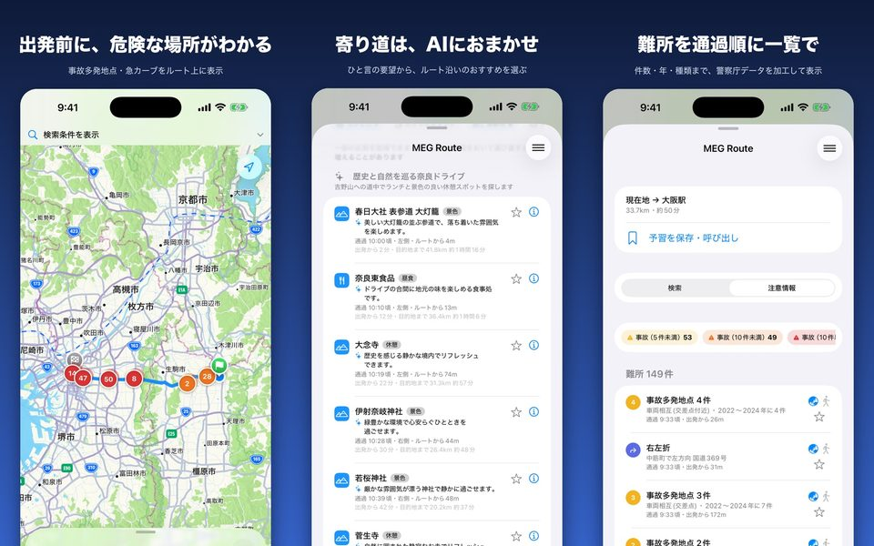
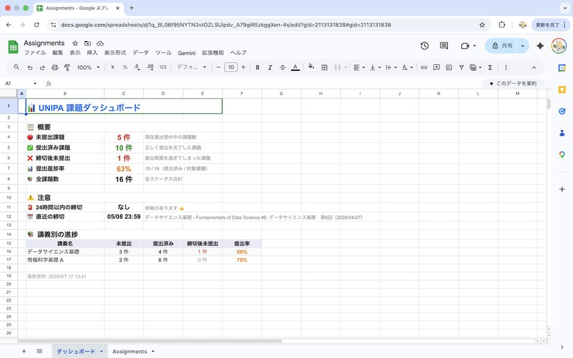

学歴
- 2026 –
- 奈良先端科学技術大学院大学
ソフトウェア設計学研究室 - 2022 – 2026
- 金沢学院大学 経済情報学部
発表
ソフトウェア工学
ヒューマンエージェントインタラクション
2026
Registers Have Rhythms: Crossing Speech Style with Reply Timing in an LLM Journaling Agent
Proceedings of the 14th International Conference on Human-Agent Interaction (HAI '26), Osaka, Japan, November 2026 (to appear)
テスト品質指標が自動プログラム修正エージェントの修正精度に与える影響の調査
ソフトウェア工学の基礎ワークショップ（FOSE2026）, ポスター発表（発表予定）
「間」を置いて既読をつける関西弁AIメンターが自己省察に与える影響の検討
第25回情報科学技術フォーラム（FIT2026）
関西弁による方言対話と階層的「間」のUXを備えたローカルLLMメンターアプリの提案
X-ICT2S3 2026 Spring Workshop
X-ICT2S3 2026 Winter: Symposium and Workshop, Vol.2026-XICT-9, No.1, pp.21–28
2025
モデル検査における反例予測精度向上のための構文解析結果の導入
X-ICT2S3 2025 Autumn Workshop
NuSMVを用いたモデル検査における構文則に着目した反例予測手法の提案
X-ICT2S3 2025 Summer Meeting
特定のNuSMVモデルに対するBERTを用いた反例予測
X-ICT2S3 2025 Winter Workshop
2024
BERTを利用したソフトウェア検証分野における反例予測
X-ICT2S3 2024 Summer Meeting
第23回情報科学技術フォーラム（FIT2024）
X-ICT2S3: Cross-Sectoral Information Exchange in the ICT Field Toward Sustainable and Smart Society
受賞・採択・出展
- 2026
- 学生ビジネスコンテスト @ KYOTO INNOVATOR'S SUMMIT 2026（京サミ2026）ファイナリスト
婚活サポートおばちゃんAI「みっちゃん」（榎本和佳と共同） - 2026
- デジタル学園祭2026 出展（FrAIend Memory 体験版「分身AIトーク」）
- 2026
- 関西テック・クリエイター・チャレンジ 2026 採択（FrAIend Memory｜チャットで続くAI日記）
- 2026
- X-ICT2S3 2026 Winter: Symposium and Workshop Best Conversant Award
- 2026
- 金沢学院大学 学長褒賞 2件（学業成績優秀者、課外活動優秀者）
- 2022 – 2026
- 金沢学院大学 KGスカラシップ奨学生
課外活動・社会貢献
- 2026.8 – 12
- 奈良県大学連携中小企業デジタル化促進事業（RA）
県内中小企業のデジタル化を支援 - 2024.9.29
- 楽しいネットワーク実験室 PACKET TRACERで学ぶデジタルメッセージの世界（TA）
北陸大学・石川中央都市圏 大学連携共同研究事業 STEAM教育講座 - 2024.8.30
- ドローン体験飛行（TA）
金沢学院大学附属高校 DX推進委員会 - 2024.8.28
- DXハイスクール事業 高大連携DX演習（ドローンプログラミング）（TA）
石川県立野々市明倫高校 探究・DX推進室企画 - 2023 – 2024
- 金沢学院大学 KGフロントランナープログラム（課外授業、担当教員：張江洋次朗）
授業外に担当教員と1対1の輪講で、研究に必要な数学・機械学習・形式手法を学ぶ（全6コマ）
- 2023 前期
- 深層学習（PyTorch）
- 2023 後期
- 集合と位相
- 2024 前期
- 自然言語処理、モデル検査、線形代数、微分積分、学会発表の準備
- 2024 後期
- 自然言語処理、モデル検査、微分方程式、ベクトル解析、複素関数、フーリエ級数・ラプラス変換、学会発表の準備
資格
- 基本情報技術者（情報処理推進機構）
- 情報セキュリティマネジメント（情報処理推進機構）
- 危険物取扱者 乙種 第1類・第4類・第6類
- 日商簿記検定 3級
所属学会
- 電子情報通信学会 学生員
公開中のアプリ

MEG Route - めぐルート
車で出かける前に、ルート上の危険な場所と立ち寄り先をまとめて確認できる予習アプリ。
App Store ・ プライバシーポリシー ・ サポート

UNIPA Assignment Sync
UNIPAの課題を自動で抽出し、Googleカレンダーとスプレッドシートに同期する拡張機能。
Chrome ウェブストア ・ GitHub
プロジェクト
FrAIend Memory
チャットで続くAI日記。関西弁と「間」をもつローカルLLMの話し相手（研究用プロトタイプ）。
gramophonify
音声を1880〜1930年代の蓄音機録音風に変換するmacOSアプリ。
Mac-Preview-Agent
Claude Codeのチャットサイドバー付きmacOSファイルビューア。
japan-road-hazards
OpenStreetMapから抽出した日本の多車線信号交差点・踏切データ（ODbL）。
cartoon-classics-radio
パブリックドメインのスーザ行進曲を24時間YouTubeラジオにするパイプライン。
apple-music-discord
Apple Musicの再生状況をDiscordに表示（macOS）。
趣味
ゲーム
インディー
その他
ドラゴンクエストV 天空の花嫁
ドラゴンクエストIV 導かれし者たち
ゼルダの伝説 ムジュラの仮面 3D
MOTHER2 ギーグの逆襲
MOTHER3
UNDERTALE
カエルの為に鐘は鳴る
ゼルダの伝説 ブレス オブ ザ ワイルド
マリオカート8 デラックス
スプラトゥーン2
スーパーマリオ オデッセイ
DELTARUNE
ゲーム発展国++
逆転裁判123 成歩堂セレクション
ドラゴンクエストXI S 過ぎ去りし時を求めて
名門ポケット学院
A Short Hike
ゼルダの伝説 ティアーズ オブ ザ キングダム
ファミレスを享受せよ
ゼノブレイドクロス ディフィニティブエディション
音楽
管楽・管弦楽
POPS
ローマの祭り
獣ゆく細道
交響的狂詩曲
POP VIRUSアルバム
弦楽四重奏曲第2番 ニ長調
展覧会の絵
幻想交響曲
再臨：片翼の天使 ～Advent: One-Winged Angel
中国の不思議な役人
レトロ
KICK BACK
冬の花
天命反転ローリンストン
春風とペトリコール
管弦楽組曲「第六の幸福をもたらす宿」
スペイン狂詩曲
コラール前奏曲「おお、人よ汝の罪の大いなるを嘆け」による幻想曲
管楽器のためのソナタ
魔笛
さよーならまたいつか！
LOST CORNERアルバム
交響曲第1番
火星人
IRIS OUT
JANE DOE
ピアノ協奏曲第1番
ラ・ヴァルス
ダンツァーレ・ラ・タランテッラ
ナイトルーティーン
管楽器のためのフィナーレ
遺書
秘儀IV
机さする
バレエ音楽「ダフニスとクロエ」第2組曲
吹奏楽
オリジナル（吹奏楽・管打楽器のための作品）
編曲
2015
行進曲「自由の鐘」
中部日本吹奏楽コンクール本大会 銀賞
秘儀III -旋回舞踊のためのヘテロフォニー
全日本吹奏楽コンクール 銀賞
大いなる約束の大地 ～チンギス・ハーン
全日本吹奏楽コンクール 銀賞
2016
土蜘蛛伝説 ～能「土蜘蛛」の物語による狂詩曲
北陸アンサンブルコンテスト 銀賞
スペインの市場で
北陸吹奏楽コンクール 金賞
バレエ音楽「ガイーヌ」より 友情の踊り、アイシェの孤独、剣の舞、収穫祭
北陸吹奏楽コンクール 金賞
2017
吹奏楽のための第1組曲
演奏会
スケルツァンド
北陸吹奏楽コンクール 銀賞
天雷无妄
北陸吹奏楽コンクール 銀賞
2018
バレエ音楽「マ・メール・ロワ」
演奏会
行進曲「双頭の鷲の旗の下に」
中部日本吹奏楽コンクール 石川県大会 銀賞
コンサート・マーチ「虹色の未来へ」
北陸吹奏楽コンクール 銀賞
ラッキードラゴン ～第五福竜丸の記憶
北陸吹奏楽コンクール 銀賞
ユーフォニアム協奏曲
演奏会
無伴奏チェロ組曲第1番 ト長調 BWV1007 より プレリュード
中部日本個人・重奏コンテスト 石川県大会 銅賞
2019
哀歌 ～「佐渡情話」の物語によるバラード
石川県アンサンブルコンテスト 金賞
マーチ・グリーン・フォレスト
いしかわ吹奏楽コンクール新人戦 銀賞
復興
いしかわ吹奏楽コンクール新人戦 銀賞
「ノートルダムの鐘」より
演奏会
三つのジャポニスム
演奏会
行進曲「空軍士官候補生」
中部日本吹奏楽コンクール 石川県大会 銀賞
マーチ「エイプリル・リーフ」
北陸吹奏楽コンクール 銀賞
キクロシス
北陸吹奏楽コンクール 銀賞
オーボエ協奏曲
演奏会
2020
マーチ・エイプリル・メイ
いしかわ吹奏楽コンクール新人戦 銀賞
シンフォニエッタ第3番「響きの森」
いしかわ吹奏楽コンクール新人戦 銀賞
群青動画制作主任
いしかわ吹奏楽コンサート WEB総選挙 第2位
2022
やまがたふぁんたじぃ ～吹奏楽のための～
石川県吹奏楽コンクール 銀賞
マードックからの最後の手紙
石川県吹奏楽コンクール 銀賞
アルセナール
演奏会
2023
行進曲「煌めきの朝」
石川県吹奏楽コンクール 銀賞
歌劇「トゥーランドット」より
石川県吹奏楽コンクール 銀賞
二つのソナタ指導
石川県アンサンブルコンテスト 銀賞
2024
ロンドン・トリオ第1番
いしかわ吹奏楽コンクール新人戦 優秀賞
ウェントス指導
北陸アンサンブルコンテスト 銅賞